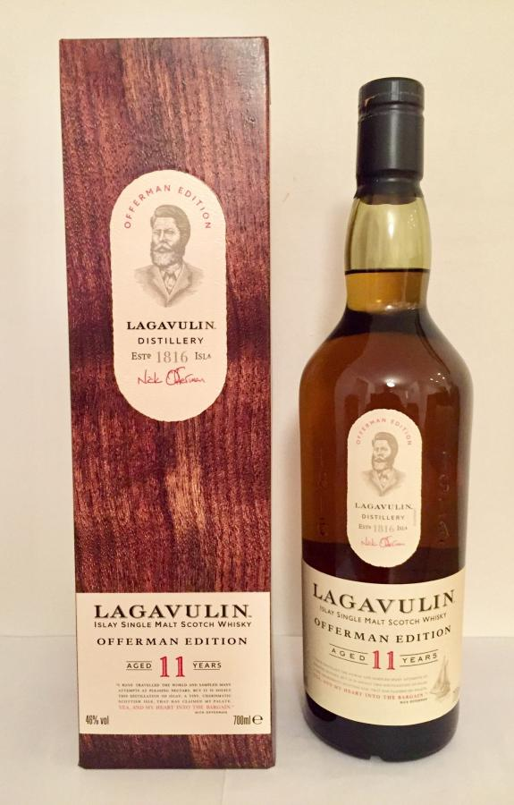
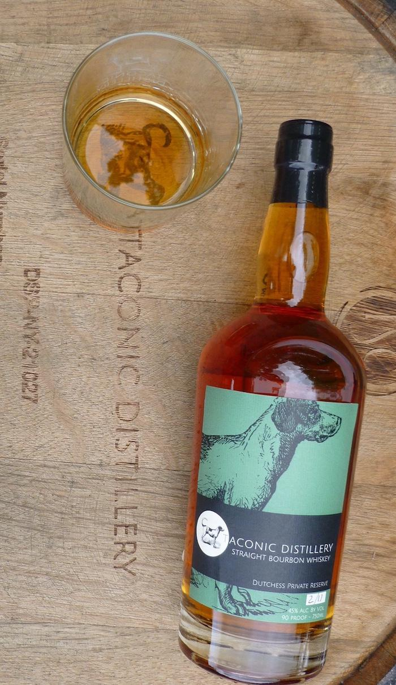
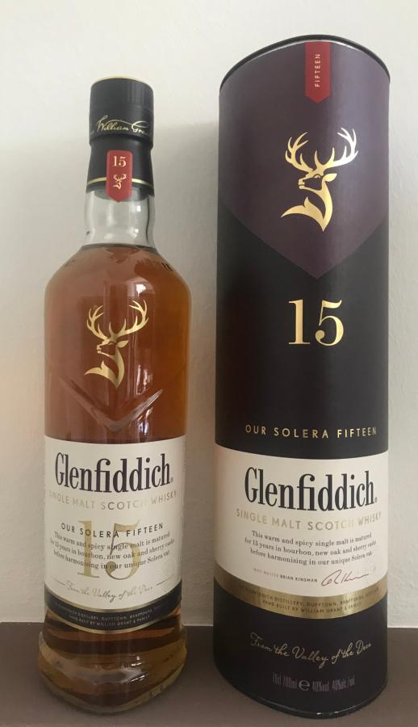

| Name | Description | Image |
|---|---|---|
| Lagavulin 11 year Nick Offerman Edition | Easily my favorite whisky, straight from scotland. The flavor profile is super smokey and peated, often described as burned dirt, and thats how I like it! |
 |
| Taconic Duchess Private Reserve | Probably my favorite bourbon, it has a really nice spiced flavor. |
 |
| Glenfiddich 15 year Solera Reserve | This scotch is matured in sherry casks, which gives it a really nice subtle sweetness. |
 |